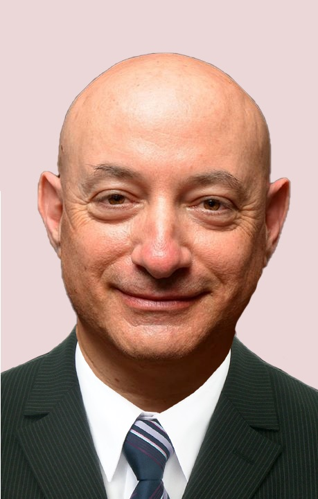

ד"ר יונתן שפירא הוא מומחה לרפואת עור ומין עם נסיון של מעל 20 שנה ומנהל שירות הטלה-דרמטולוגיה (רפואת עור מרחוק) במכבי שירותי בריאות. בנוסף, הוא מרצה בבית הספר ללימודי המשך לרפואה בטכניון בחיפה ובבית הספר לרפואה באוניברסיטת תל אביב.
ד"ר שפירא משמש כיועץ לחברת הסטארט-אפ Predicta-Med LTD, המפתחת אלגוריתמים לגילוי מוקדם של מחלות אוטואימוניות ודלקתיות.
